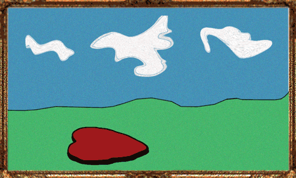

Love Hurts

"Love Hurts" is an animated, single-page web project featuring built-in Makey-Makey interactivity. The piece showcases a hand-animated digital illustration framed within a browser view, where physical computing elements integrate directly with the digital interface.
For display purposes, the circuit's two corresponding points of contact are connected to a prop fake knife and a fake heart, allowing physical interaction to trigger the animation. Featuring entirely hand-produced audio elements, the project bridges physical props, custom hardware interfacing, and digital web animation.